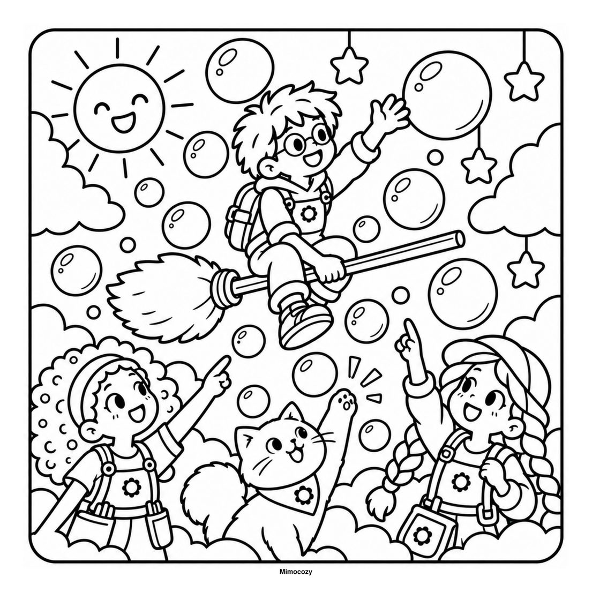
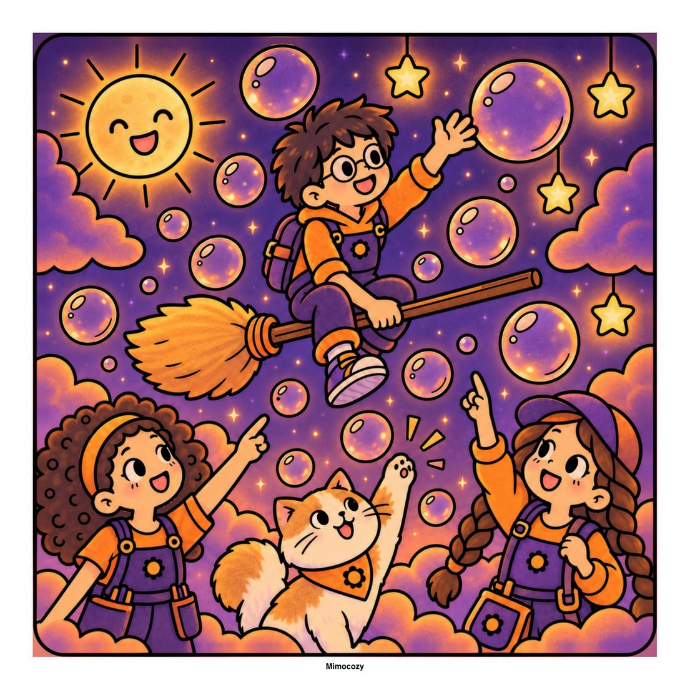
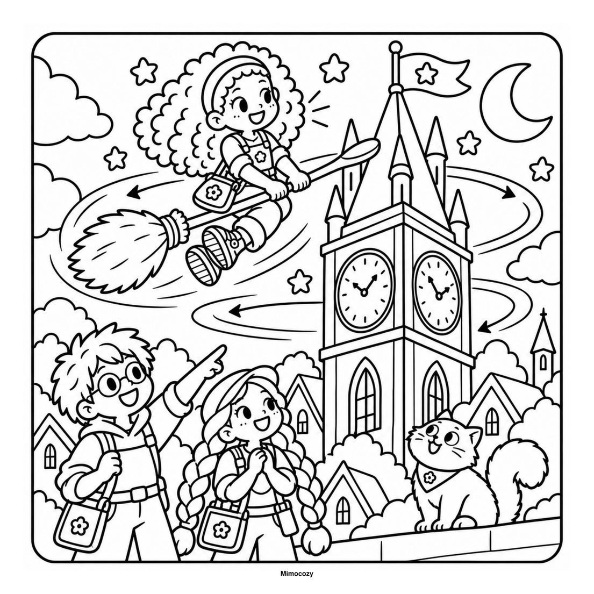
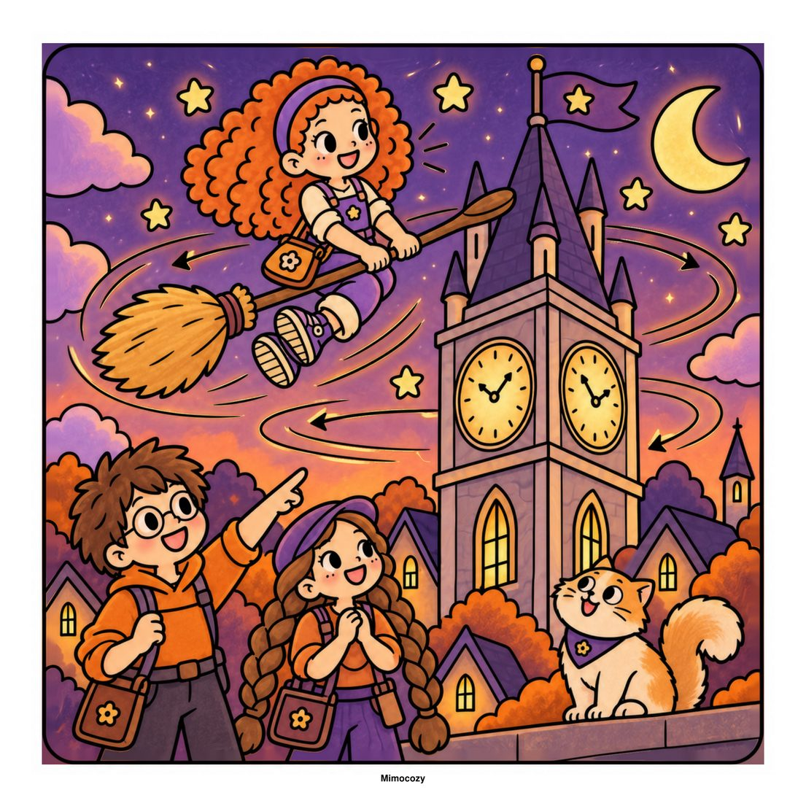

A brigada está pronta para descolar! Mais reparações mágicas, testes de voo divertidos e uma festa alegre por cima da aldeia. São 27 ilustrações para colorir.
Toca numa imagem para a ver em grande. Usa as setas ou desliza para mudar.
Dá vida às tuas páginas
Exemplos de pintura: a mesma página do livro, antes e depois de colorida. O livro traz as páginas a preto e branco.

Página original

Exemplo de pintura

Página original

Exemplo de pintura
Descobre a história
Aventuras spooky-cute cheias de charme.
The Broomstick Repair Brigade
Pequenas reparações, grandes aventuras. A Tessa, o Milo, a Juniper e o Sparkplug voltam ao trabalho para mais reparações mágicas, testes de voo divertidos e uma festa alegre por cima da aldeia. São 27 ilustrações com verso em branco, o final da história que começou na Parte 1.
Uma pequena reparação, muita magia. A Tessa, o Milo, a Juniper e o Sparkplug reparam vassouras numa oficina de Halloween cheia de invenções curiosas. São 27 ilustrações para colorir.
Esta noite há festa na casa assombrada, mas a lanterna da lua desapareceu. Junta-te ao fantasma Milo, à gata Nova e à abóbora Pip e segue as pistas pela biblioteca, pela cozinha e pelo grande salão de baile.
Um brilho desaparecido, um comboio por cima das nuvens e um pequeno dragão com um presente muito especial. São 28 ilustrações de cena inteira para colorir em Nocturna.
Os amigos de Halloween mais fofos numa aventura assustadoramente doce: fantasmas simpáticos, abóboras, morcegos e gatos. São 40 páginas grandes e fáceis, mais 10 atividades de Halloween.